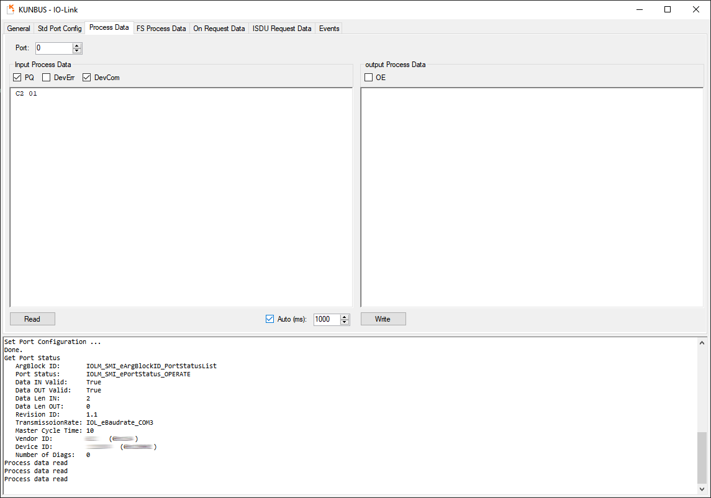

IO-Link Master1.09.04 |
 |


|
IO-Link Master1.09.04 |
|
|
To start working with the Eight Port IO-Link Master, you need the software Code Composer Studio™(CCS).
This example has been compiled and tested with the following versions:
| Software Package | Version |
|---|---|
| Code Composer Studio™(CCS) | 12.2.0 |
| MCU+ SDK | 08.06.00.22 |
| TI ARM clang | 2.1.2.LTS |
| SysConfig Tool | 1.15.0 |
Importing the project into your CCS workspace


CCS should have discovered and selected the project.

Make sure the IO-Link Master USB JTAG is connected to the PC and the Master is powered on.Since we are running the application on the R5F, one needs to initialize the whole board through the DMSC M3.
The MCU+ SDK includes a launch script which does all the initalization steps.
It is located in the MCU+ SDK folder at mcu_plus_sdk_am243x_08_06_00_22 /tools/ccs_load/am64x_am243x/.
Depending on your CCS setup, one needs to edit the paths to fit the local installation in the load_dmsc.js file,
which can be seen in the Screenshot below. The version number needs to be changed to the installed MCU+ SDK version if it is not automatically detected. 
After that, one needs to check your Debug Configuration in Run->Debug Configurations.
See if the configured launch file location fits to your setup environment.
Otherwise one also needs to edit this line.


CCS automatically builds the project, connects to the Master,
transfers the compiled binary project data into the Master's RAM and starts a debugging session.
When the transfer is complete the debugger halts at the main() function.

This example runs the Master stack functions in its own seperate task. This task initializes
all needed interfaces and then executes the IOLM_exampleRun() function in an endless loop.
The IOLM_exampleRun() function is located in the ExampleSMI.c file,
where it is possible to add or modify code to fit the desired environment.
The IO-Link Master GUI can be used to connect to the IO-Link Master's
Standardized Master Interface (SMI) via usb, set up configuration parameters,
read status information and communicate with attached IO-Link devices.
Now one can connect a micro USB cable to the UART USB portfor the AM243x EVM or to XDS110 MAIN UART0 USB port (J20) for the AM243x Launchpad.
In the Std Port Config tab the configuration and status of the Master's eight ports
can be read and changed.
You can retrieve the Master's current port configuration and port status
by clicking the corresponding buttons.
The default setting sets all ports except the first one (port number: 0) to DEACTIVED.
Port 0 is by default set to IOL_AUTOSTART, which starts an auto-detect-sequence.
For more details on port modes see the section Set up IO Link Port
and the IO-Link Specification v1.1.2.
After changing the Master's port configuration it will be saved in its internal
non-volatile memory and remain even after restarting or turning it off.
To connect a Device to a certain port, its mode has to be changed to IOL_AUTOSTART.


If a Device is connected and the communication is established, the port's status changes
from DEACTIVED to OPERATE.
To read Process Data from a Device go to the Process Data tab
and set Port: to its corresponding port number.


In the On Request Data tab you can request Indexed Service Data Units (ISDUs)
from the Device or send ISDUs to the Device.
For more information on ISDUs see the IO-Link Specification v1.1.2.
As an example, you can get the vendor name by setting the Index to 16
and leaving the Sub-Index set to 0.
It is possible to import IO Device Description (IODD) files for ones connected Devices
in the Std Port Config tab. This makes it easier to read and set Device parameters.
For more information on IODD files see the IO-Link Specification v1.1.2 and the IODDFinder.

Values which aren't read-only can be changed and then sent to the Device by pressing the Write button.
 1.9.1
1.9.1